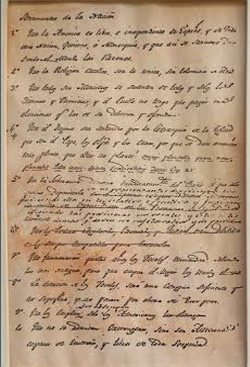
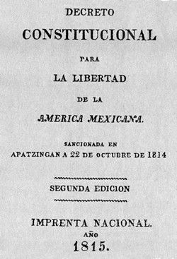

|
ANTECEDENTES BIBLIOGRAFÍAS PRINCIPAL |
|  | Sentimientos de la nación 1813Este documento fue dictado por José María Morelos y Pavón entre el 26 de noviembre de 1812 y el 9 de febrero de 1813 y redactado por Andrés Quintana Roo, para ser leído el día 14 de septiembre de 1813 durante la apertura del Congreso de Anáhuac en la ciudad de Chilpancingo, ese entonces, dentro de la Provincia de Tecpan. |
 | Constitución de 1814- ApatzingánLa Constitución de Apatzingán de 1814 fue escrita por el Congreso de Chilpancingo, a iniciativa de José María Morelos y Pavón. Fue promulgada el 22 de octubre de 1814 y se basó en Los sentimientos de la nación y en la Constitución de Cádiz, promulgada en 1812. La Constitución de Apatzingán fue un punto de partida para la redacción de la Constitución Federal de los Estados Unidos Mexicanos de 1824. |
© 2024. Derechos reservados.
Elaborado por:ZAMORA (2024)
UABC
FEYRI